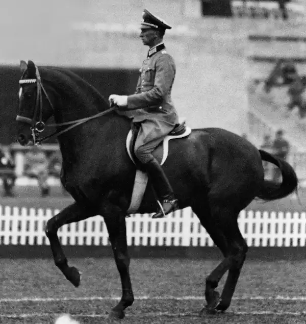

Home
The word "Dressage" derives from the french verb "dresser", which means "to train". Xenophon, a military leader of ancient Greece who lived about 400 B.C., is often considered to be the first individual to teach dressage. Dressage at this point was focused primarily on creating a good calvary mount. These horses were required to be strong, agile, well-balanced, obedient, and brave. The roots of many of the movements performed in modern dressage are found in calvary horse training.

Photo Credit: FEI/ Benjamin Clark
Dressage debuted as an Olympic sport in 1912, but only military officers were allowed to compete. In 1953, both women and civilian men were authorized to compete. According to the Fédération Équestre Internationale (FEI), 30 countries were represented in Dressage in the Summer 2024 Paris Olympic Games.
About The Website
This website is about dressage. Below is a breif history and explaination of dressage. There is also a page for common terminology, a page describing some of the levels of dressage, and a page with a contact form.
The terminology page uses JavaScript to load a list of terms with definitions. The number of times the contact form is submitted is saved in local storage. All photos have lazy loading.